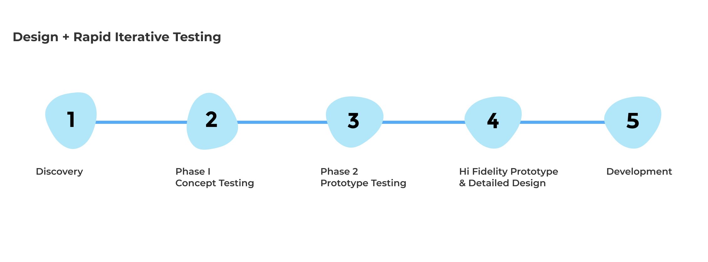
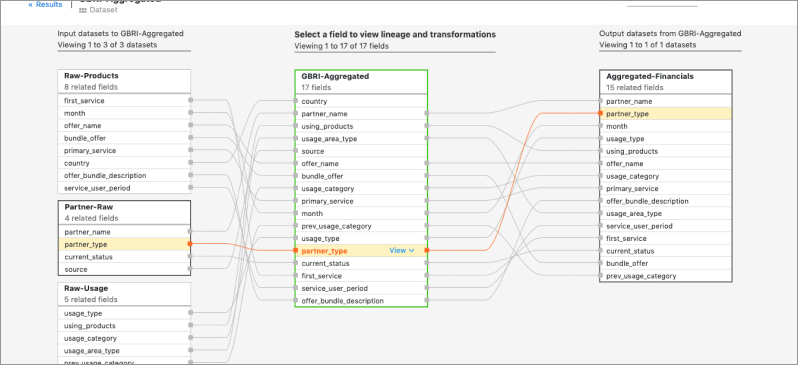

Lineage
Solving a Complex problem with Design Thinking and Agile Methodology
Background
Workday Analytics customers want end-to-end visibility of the data origin and what transformation happens to it
and how it gets used. Data Lineage provides a way to understand where the data is coming from and where it is going. Datasets can have fields with complex logic.
Enterprise users needs to understand:
1. Where the field originates from
2. What transformations and calculations are applied
3. Dependency from both upstream and downstream in the lineage.
This is useful to understand the impact of the changes to the field logic to root cause issues, adapt to business changes and data governance.
Goals
Our goal is to make it easy for the user to quickly find a field and present a visual flow of the field along with transformations and calculations happened leading upto the origin. find and change field logic and involves manual maintenance in an external spreadsheet.
My Role
Design Strategy, Competitive Evaluation, Research Participation, Customer Engagement, Onbaording and Managing 2 designers.
Understand pipeline maintenance use cases and how our customers are currently maintaning and updating field logic. Create concept designs and rapid iterative testing to refine the designs.


We evaluated applications to understand the mental model and existing approaches for navigating to a field origin
from both direct and indirect competitors.
Decomposition Tree visual in Power BI lets you visualize data across multiple dimensions and enables drilling down into your dimensions
in any order. We were envisioning similar interactions for drillling down into a field.
Cloud Data Fusion field level lineage shows the relationship between the fields of a dataset and the transformations that were performed on a set of fields to produce a different set of fields.

The goals of our concept testing was to determine the user mental model in
navigating fields both upstream and downstream in their pipeline. We wanted to assess the usabiliy of the proposed UI,
navigation and information architecture.
This study helped us answer questions such as:
1. Where does the user search for fields?
2. Does the user understand the flow of the field through various stages and datasets in the pipeline?
3. Does the user understand what transformations or calculations were applied to the field?
4. Can the user get to the origin of the fields?
4. Can the user understand how the field it is used downstream?
5. Is the user able to identify the errors in the fields
{kind=link}
{kind=link}
{kind=link}
{kind=link}
Insights from concept testing
1.Blue line highlighted in the dataset lineage guided the user and was useful in understanding related nodes.
2.Accessibility was easy and intuitive to the field lineage from the inspector panel.
3.Left to Right flow was easy to understand the direction of upstream and downstream flow (similar to data lineage.
4.Different persona may use different entry points such as Data Catalog or Lineage and also depends on the question.
5.Biggest learning was that customers can have very complicated pipeline and the current approach of stacking fields cannot scale.
We had 2 main set of challenges coming from
1. Big data and enterprise production environments:
a.Complexity of the relations between fields and large schemas
b.Scaling design to large number of fields
c.Variability in dependencies
2.System and Performance Constraints:
a.Users can view only one branch at a time due to backend limitation
b.User needs to select a node to drill down whenever there is a forking condition or multiple pathways
c.Avoid overload of information and show only events of interest for the user
d.Drawing library had limited functionality and redrawing dynamic changes were hard
Scenario based Prototyping
We analyzed our customer pipeline configurations and choose the top 3 scenarios
that will cover a wide range of use cases.
We created shared terminology so the teams can refer the interaction behavior and
generalized the behavior with rules that can apply to various scenarios.
Creating reusable components allowed us to quickly design the various scenarios and get iterative feedback and refine the designs.

Final Prototype
We took a phased approach by delivering continuous value to customers by breaking this into a multi release feature.
"That looks good. That's really, really great. I think it would definitely help me. Right now how we do it is with a rough manual process. I can’t wait to get this feature soon."
This has been hugely popular with our customers as this capability allows you to go back from reports and understand what exactly went through in that life cycle of that data. Very helpful in audit scenarios to understand what you're looking at from your reports and dashboards.
Journey on this project has been extremely challenging initially exacerbated with the onset of pandemic. New paradigms has to be established to embrace constraints and tackling complexity. By focussing on real world scenarios and coming up with shared terminology and rules we were able to simplify and successfully deliver this feature to our analytics customers.